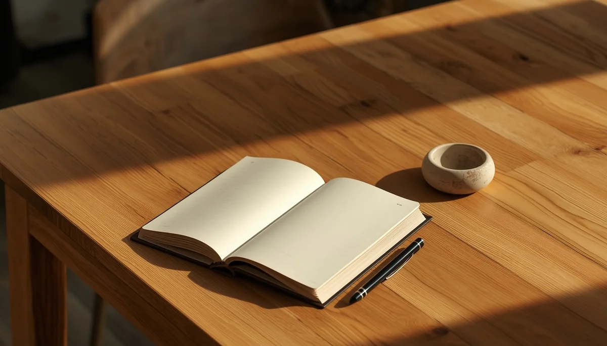

Rutinas diarias que potencian la coordinación
Las actividades cotidianas del día a día esconden innumerables oportunidades para estimular el desarrollo psicomotor sin necesidad de planificar sesiones extraordinarias. Vestirse de forma autónoma, amasar pan con las manos, transportar objetos pequeños o colaborar en la recogida de la casa son tareas que movilizan la coordinación óculo-manual, el equilibrio y la conciencia corporal.
Integrar el movimiento en los hábitos cotidianos
Aprovechar momentos como el baño para jugar con texturas acuáticas, permitir que el niño suba las escaleras cogido de la mano a su propio ritmo o habilitar espacios de juego libre tras la guardería o el colegio enriquece su repertorio motor. Estas rutinas sencillas refuerzan la estabilidad postural y otorgan al menor un papel activo y competente en su rutina diaria.
La importancia del equilibrio entre actividad y reposo
Tan importante como el ejercicio físico activo y el juego desbordante es alternarlo con momentos de calma, lectura reposada y descanso consciente que permitan al sistema nervioso asimilar y procesar todo lo aprendido.
"Las rutinas diarias más ordinarias se convierten en extraordinarias herramientas de aprendizaje cuando permitimos que el cuerpo participe de forma activa."
Construyendo hábitos motores sólidos con naturalidad
Infundir dinamismo y autonomía en las tareas de cada jornada consolida destrezas físicas duraderas que enriquecen el crecimiento global del niño.
➔ Volver al índice de Desarrollo psicomotor